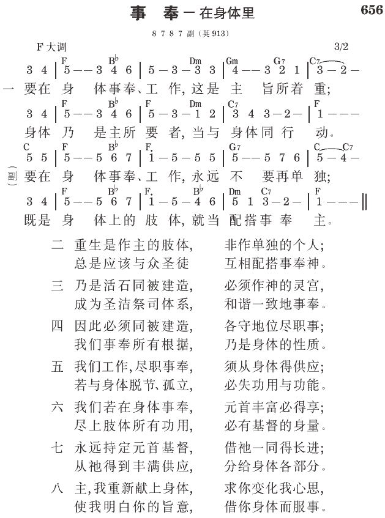

徒1:7 父凭着自己的权柄所定的时候或时期，不是你们可以知道的。
弗4:11 祂所赐的，有些是使徒，有些是申言者，有些是传福音者，有些是牧人和教师，
弗4:12 为要成全圣徒，目的是为着职事的工作，为着建造基督的身体。
新约的职事在宇宙中是独一无二的
在整个宇宙中只有两个职事。林后三章说到旧约的职事是“属死的职事”和“定罪的职事”（7，9）。旧约的职事只作两件事：定罪人，并把人治死。但新约和基于新约的新职事，乃是那灵的职事和义的职事，也就是称义的职事（8~9）。
新约职事的工作，是要完成神关于召会的新约经纶（弗三9~10），建造基督的身体。以弗所四章十二节说，众圣徒都需要被成全，“目的是为着职事的工作。”这就是说，成百甚至成千的圣徒都能被成全，目的是为着职事的工作。在本节里用“职事”这辞，毫无疑问，这是指新约唯一的职事，以完成新约中所包含神永远的定旨。神的新约包含神的经纶。要完成这经纶，是需要极力工作的，而那个工作就是职事。在十二节，“为着建造基督的身体”这句话，是“目的是为着职事的工作”这句话的同位语。这清楚地指明，作职事的工作，就是建造基督的身体。
许多执事都各自有他们在这团体职事里的一分
新约唯一的职事，包括众使徒所有的工作（众职事），而众使徒乃是新约的众执事。林后三章六节清楚地用“这些执事”这个复数辞，而八、九节则用单数的“职事”。然后，在四章一节保罗说，“因此，我们既照所蒙的怜悯，受了这职事，就不丧胆。”这里保罗用复数的代名词“我们”。他不是说他（单数）受了这职事，乃是说我们（复数）受了这职事（单数）。这里的我们不仅包括保罗，更包括所有的新约执事。这一切都指明，众多新约的执事，只有一个新约的职事。职事是事奉、工作，而执事是事奉的人。事奉的人有许多。在十二使徒之后，有许多的执事，包括保罗、巴拿巴、和许多其他的人，进入这职事。虽然执事有许多，但这许多执事只有一个职事。
保罗嘱咐提摩太要尽他的职事。在提后四章五节，保罗说到提摩太的职事，指个别的职事。这是提摩太个人的职事，但这个人的职事乃是团体职事，“这职事”，新约唯一职事的一部分。林后四章一节的职事，是所有新约执事团体的职事。在这团体的职事里，保罗有他的一分，彼得有他的一分，提摩太也有他的一分。所有的执事，都各自有他们在这职事里的一分。我们把所有这些分加在一起，那就是“这职事”，也就是新约的职事（《新约的职事以及使徒的教训和交通》四至六页）。
分裂来自不同职事的不同教训
我有负担强调职事的一这点。在基督徒中间，最损害的事就是分裂和混乱。不仅如此，一切的分裂和混乱都是出自一个源头，那个源头就是不同的职事。
我向亲爱的众圣徒说这样警告的话，我更是对我自己这样说。许多时候我看见了一些新的东西，我就把它摆在主今日职事的光中，非常谨慎的考量。我必须非常谨慎的考量每一项，是不是出于神今天的职事。点点都必须照着神的基本经纶来衡量。怎样衡量每一点，怎样对每一项下断案，全在于神的基本经纶，就是执行基督的职事，以产生召会。
倘若我们对于神的经纶，遵守这一个基本原则和基本因素，我们就会受到良好的保护。然而，我们个个都必须儆醒，不仅为别人儆醒，也顾到我们自己，使我们不至被仇敌利用，带进似乎是合乎圣经的不同思想或教训（《长老训练㈠新约的职事》八、一三至一四页）。
作为神经纶目标的新耶路撒冷，乃是终极完成的神与蒙祂重生之信徒的宇宙合并。神在祂神圣的三一里是一个合并，神圣三一的三者互相内在，并且在一起是一而行事（约十四10~11）。不仅如此，基督在父里面，我们在基督里面，基督也在我们里面（20）。这三个“在…里面”的总结与总和，乃是实际的灵，就是基督自己，在我们里面成了实际（17）。实际的灵来了，不仅与我们同在，也在我们里面。我们在子神里面，子神在我们里面，也在父里面，这启示出一种合并。这合并先是基督的身体，然后是新耶路撒冷。神的经纶就是要为基督得着一个身体，而这身体要终极完成新耶路撒冷，就是终极完成的神与重生信徒之扩大、宇宙的合并
（《基督的人性结晶读经》四九页）。
参读：《新约的职事以及使徒的教训和交通》第一章；《长老训练㈠新约的职事》第一篇；《基督的人性结晶读经》第六篇。
